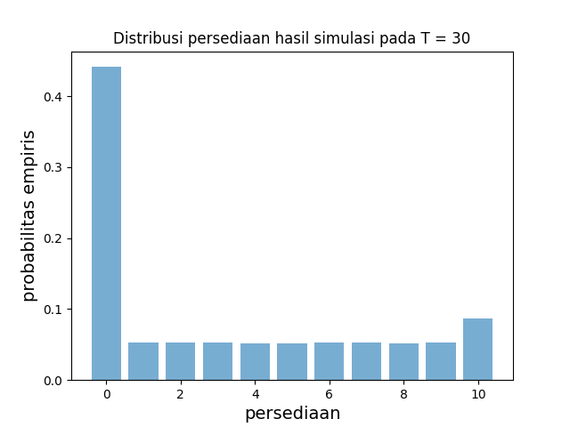
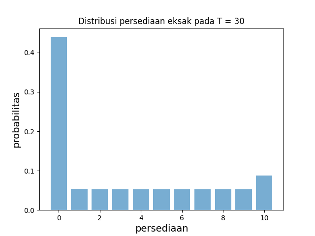

Persamaan Kolmogorov Mundur
Selain yang tersedia di lingkungan ilmiah Python, kuliah ini memerlukan NumPy, Matplotlib, Numba, dan SciPy.
# Dependensi unit disediakan oleh lingkungan luring yang dikunci.
# Tidak ada instalasi paket pada saat pembaca dijalankan.Catatan adaptasi hilir. Sumber menjalankan
!pip install quantecondi dalam pembaca. Instalasi saat runtime dihapus agar edisi ini dapat diputar ulang secara luring dan deterministik. Sel kode serta posisinya dipertahankan sebagai permukaan provenance, sedangkan paketquantecontidak diperlukan oleh kode unit ini.
Gambaran umum
Ketika model menjadi semakin rumit, penurunan representasi analitis bagi semigrup Markov \((P_t)\) menjadi semakin sulit.
Hal ini serupa dengan kenyataan bahwa solusi model waktu kontinu sering kali tidak memiliki bentuk analitis.
Sebagai contoh, ketika mempelajari lintasan deterministik dalam waktu kontinu, deskripsi infinitesimal (ODE dan PDE) sering lebih intuitif dan lebih mudah dituliskan daripada solusi yang bersesuaian.
(Ini adalah salah satu wawasan cemerlang dalam matematika, yang bermula dari karya ilmuwan besar seperti Isaac Newton.)
Dalam kuliah ini kita akan melihat bahwa hal yang sama berlaku bagi rantai Markov waktu kontinu.
Agar kita dapat memusatkan perhatian pada intuisi alih-alih rincian teknis, ruang keadaan dalam kuliah ini diasumsikan berhingga, dengan \(|S|=n\).
Kelak kita akan menyelidiki kasus \(|S|=\infty\).
Kita akan memakai impor berikut.
import numpy as np
import matplotlib.pyplot as plt
from numba import njit
from scipy.linalg import expm
from scipy.stats import binomCatatan adaptasi hilir. Impor
scipy as spdanquantecon as qepada sumber tidak dipakai oleh unit ini dan dihapus. Impor yang diperlukan oleh setiap sel komputasi tetap dipertahankan.
Intensitas Lompatan yang Bergantung pada Keadaan
Seperti telah kita lihat, rantai Markov waktu kontinu melompat di antara keadaan-keadaan dan karena itu dapat berbentuk
\[ X_t = \sum_{k \geq 0} Y_k \mathbb 1\{J_k \leq t < J_{k+1}\} \qquad (t \geq 0) \]
di mana \((J_k)\) adalah waktu-waktu lompatan dan \((Y_k)\) adalah keadaan pada setiap lompatan.
(Kita mengasumsikan bahwa \(J_k \to \infty\) dengan probabilitas satu sehingga \(X_t\) terdefinisi untuk semua \(t \geq 0\). Hal ini selalu benar ketika waktu tinggal berdistribusi eksponensial dengan laju positif dan ruang keadaannya berhingga.)
Dalam kuliah sebelumnya,
- barisan \((Y_k)\) dibangkitkan dari matriks Markov \(K\) dan disebut rantai lompatan tertanam, sedangkan
- waktu tinggal \(W_k := J_k-J_{k-1}\) bersifat IID dan Exp\((\lambda)\) untuk suatu intensitas lompatan konstan \(\lambda\).
Dalam kuliah ini kita melakukan generalisasi dengan membolehkan intensitas lompatan berubah menurut keadaan.
Perbedaan ini tampak kecil, tetapi sesungguhnya memungkinkan kita mencapai keumuman penuh dalam deskripsi rantai Markov waktu kontinu, sebagaimana akan diperjelas di bawah.
Motivasi
Sebagai contoh motivasi, ingat kembali model persediaan, tempat kita mengasumsikan bahwa waktu tunggu hingga pelanggan berikutnya datang sama dengan waktu tunggu hingga persediaan baru datang.
Asumsi ini dibuat semata-mata demi kemudahan dan tampaknya tidak realistis.
Ketika asumsi tersebut kita longgarkan, intensitas lompatan bergantung pada keadaan.
Algoritma Rantai Lompatan
Kita mulai dengan tiga objek dasar:
- kondisi awal \(\psi\),
- matriks Markov \(K\) pada \(S\) yang memenuhi \(K(x,x)=0\) untuk semua \(x\in S\), dan
- fungsi \(\lambda\) yang memetakan \(S\) ke \([0,\infty)\).
Proses \((X_t)\)
- bermula pada suatu keadaan \(x\) yang diambil dari \(\psi\),
- jika \(\lambda(x)>0\), tinggal di sana selama waktu eksponensial \(W\) dengan laju \(\lambda(x)\); jika \(\lambda(x)=0\), tinggal di sana selamanya, dan
- ketika waktu tinggalnya berhingga, diperbarui ke keadaan baru \(y\) yang diambil dari \(K(x,\cdot)\).
Selanjutnya \(y\) menjadi keadaan baru proses dan langkah-langkah tersebut diulangi.
Berikut algoritma yang sama dalam bentuk lebih eksplisit.
Algoritma Rantai Lompatan Masukan \(\psi \in \dD\), fungsi laju \(\lambda\), matriks Markov \(K\)
Keluaran rantai Markov \((X_t)\)
- Ambil \(Y_0\) dari \(\psi\), tetapkan \(J_0=0\) dan \(k=1\).
- Dengan syarat pada \(Y_{k-1}\), ambil \(W_k\) dari Exp\((\lambda(Y_{k-1}))\) bila \(\lambda(Y_{k-1})>0\); bila lajunya nol, tetapkan \(W_k=+\infty\). Pengambilan ini independen dari pengambilan sebelumnya dengan syarat pada lintasan keadaan.
- Tetapkan \(J_k=J_{k-1}+W_k\).
- Tetapkan \(X_t=Y_{k-1}\) untuk \(t\) dalam \([J_{k-1},J_k)\).
- Jika \(W_k=+\infty\), hentikan algoritma; jika tidak, ambil \(Y_k\) dari \(K(Y_{k-1},\cdot)\), secara independen dari \(W_k\) dengan syarat pada \(Y_{k-1}\).
- Tetapkan \(k=k+1\) dan kembali ke langkah 2.
Dengan syarat pada lintasan keadaan \((Y_k)\), waktu-waktu tinggal \((W_k)\) saling independen dan, pada laju positif, \(W_k\) memiliki distribusi Exp\((\lambda(Y_{k-1}))\); laju nol memberi waktu tinggal \(+\infty\). Secara umum, waktu-waktu tersebut tidak berdistribusi identik dan tidak independen dari lintasan keadaan tanpa pengondisian. Dengan syarat pada keadaan saat ini \(Y_{k-1}\), waktu tinggal berikutnya \(W_k\) dan keadaan berikutnya \(Y_k\) saling independen.
Catatan koreksi hilir. Sumber menyatakan bahwa \((W_k)\) adalah barisan IID dan independen dari \((Y_k)\). Pernyataan itu hanya benar pada kasus laju konstan sebelumnya. Pada laju \(\lambda(Y_{k-1})\) yang bergantung pada keadaan, struktur independensi yang tepat adalah struktur bersyarat yang dinyatakan di atas. Otoritas sumber tetap dipertahankan terpisah tanpa perubahan.
Syarat \(K(x,x)=0\) untuk semua \(x\) memastikan bahwa \((X_t)\) benar-benar berpindah ke keadaan lain pada setiap waktu lompatan.
Menghitung Semigrup
Untuk proses lompatan \((X_t)\) dengan intensitas bergantung keadaan yang dijelaskan oleh algoritma rantai lompatan, menghitung semigrup Markov bukanlah latihan sepele.
Catatan koreksi hilir. Sumber menyebut intensitas ini “berubah terhadap waktu”. Modelnya tetap homogen terhadap waktu; yang berubah di sepanjang lintasan adalah laju karena laju tersebut ditentukan oleh keadaan saat ini.
Pendekatan kita adalah
- memakai penalaran probabilistik untuk memperoleh persamaan integral yang harus dipenuhi semigrup,
- mengubah persamaan integral itu menjadi persamaan diferensial yang lebih mudah ditangani, dan
- menyelesaikan persamaan diferensial tersebut untuk memperoleh semigrup Markov \((P_t)\).
Persamaan diferensial yang dimaksud memiliki nama khusus: persamaan mundur Kolmogorov.
Sebuah Persamaan Integral
Berikut langkah pertama dalam urutan di atas.
Sebuah Persamaan Integral Semigrup \((P_t)\) dari proses lompatan dengan fungsi laju \(\lambda\) dan matriks Markov \(K\) memenuhi persamaan integral
\[ P_t(x, y) = e^{-t \lambda(x)} I(x, y) + \lambda(x) \int_0^t (K P_{t-\tau})(x, y) e^{- \tau \lambda(x)} d \tau \]
untuk semua \(t\geq0\) dan \(x,y\) dalam \(S\).
Di sini \((P_t)\) adalah semigrup Markov dari \((X_t)\), yakni proses yang dibangun melalui algoritma rantai lompatan, sedangkan \(KP_{t-\tau}\) adalah hasil kali matriks \(K\) dan \(P_{t-\tau}\).
Dengan mengondisikan secara implisit pada \(X_0=x\), semigrup \((P_t)\) harus memenuhi
\[ P_t(x, y) = \PP\{X_t = y\} = \PP\{X_t = y, \; J_1 > t \} + \PP\{X_t = y, \; J_1 \leq t \} \]
Untuk suku pertama di ruas kanan persamaan pt_split, kita mempunyai
\[ \PP\{X_t = y, \; J_1 > t \} = I(x, y) \PP\{J_1 > t \} = I(x, y) e^{- t \lambda(x)} \]
di mana \(I(x,y)=\mathbb 1\{x=y\}\).
Catatan koreksi hilir. Faktor peluang pada baris sumber ditulis \(P\{J_1>t\}\), sementara seluruh unit memakai makro probabilitas \(\PP\). Notasi tersebut dinormalkan menjadi \(\PP\{J_1>t\}\) tanpa mengubah makna.
Untuk suku kedua di ruas kanan persamaan pt_split, kita mempunyai
\[ \PP\{X_t = y, \; J_1 \leq t \} = \EE \left[ \mathbb 1\{J_1 \leq t\} \PP\{X_t = y \,|\, W_1, Y_1\} \right] = \EE \left[ \mathbb 1\{J_1 \leq t\} P_{t - J_1} (Y_1, y) \right]. \]
Dengan menghitung nilai harapan dan memakai independensi \(J_1\) dan \(Y_1\) bersyarat pada \(X_0=x\), hasil ini menjadi
\[ \begin{aligned} \PP\{X_t = y, \; J_1 \leq t \} & = \int_0^\infty \mathbb 1\{\tau \leq t\} \sum_z K(x, z) P_{t - \tau} (z, y) \lambda(x) e^{-\tau \lambda(x)} d \tau \\ & = \lambda(x) \int_0^t \sum_z K(x, z) P_{t - \tau} (z, y) e^{-\tau \lambda(x)} d \tau . \end{aligned} \]
Menggabungkan hasil ini dengan persamaan pt_split dan persamaan pt_first menghasilkan persamaan kbinteg.
Persamaan Diferensial Kolmogorov
Kita telah memastikan bahwa semigrup \((P_t)\) yang terkait dengan proses rantai lompatan \((X_t)\) memenuhi persamaan kbinteg.
Persamaan persamaan kbinteg penting, tetapi kita dapat menyederhanakannya lebih lanjut tanpa kehilangan informasi dengan mengambil turunan terhadap waktu.
Hal ini membawa kita pada hasil utama kuliah.
Persamaan Kolmogorov Mundur Semigrup \((P_t)\) dari proses lompatan dengan fungsi laju \(\lambda\) dan matriks Markov \(K\) memenuhi persamaan Kolmogorov mundur
\[ P'_t = Q P_t \quad \text{dengan } \; Q(x, y) := \lambda(x) (K(x, y) - I(x, y)). \]
Turunan di ruas kiri persamaan kolbackeq diambil unsur demi unsur terhadap \(t\), sehingga
\[ P'_t(x, y) = \left( \frac{d}{dt} P_t(x, y) \right) \qquad ((x, y) \in S \times S). \]
Pembuktian bahwa menurunkan persamaan kbinteg menghasilkan persamaan kolbackeq adalah latihan penting (lihat di bawah).
Solusi Eksponensial
Persamaan Kolmogorov mundur adalah persamaan diferensial bernilai matriks.
Ingat bahwa, untuk persamaan diferensial skalar \(y'_t=ay_t\) dengan konstanta \(a\) dan kondisi awal \(y_0\), solusinya adalah \(y_t=e^{ta}y_0\).
Hal ini, bersama \(P_0=I\), mendorong kita menduga bahwa solusi persamaan mundur Kolmogorov persamaan kolbackeq adalah
di mana ruas kanan adalah eksponensial matriks, yang didefinisikan oleh
\[ e^{tQ} = \sum_{k \geq 0} \frac{1}{k!} (tQ)^k = I + tQ + \frac{t^2}{2!} Q^2 + \cdots . \]
Dengan bekerja unsur demi unsur, mudah diperiksa bahwa turunan fungsi eksponensial \(t\mapsto e^{tQ}\) adalah
\[ \frac{d}{dt} e^{t Q} = Q e^{t Q} = e^{t Q} Q . \]
Jadi, menurunkan persamaan expsol memberikan \(P'_t=Qe^{tQ}=QP_t\), yang meyakinkan kita bahwa solusi eksponensial memenuhi persamaan kolbackeq.
Perhatikan bahwa solusi kita
\[ P_t = e^{t Q} \quad \text{dengan } \; Q(x, y) := \lambda(x) (K(x, y) - I(x, y)) \]
untuk semigrup proses lompatan \((X_t)\) yang terkait dengan matriks lompatan \(K\) dan fungsi intensitas lompatan \(\lambda\colon S\to[0,\infty)\) konsisten dengan hasil kita sebelumnya.
Khususnya, kita telah menunjukkan bahwa, untuk model dengan intensitas lompatan konstan \(\lambda\), berlaku \(P_t=e^{t\lambda(K-I)}\).
Ini jelas merupakan kasus khusus persamaan psolq.
Sifat-sifat Solusi
Mari kita selidiki lebih lanjut sifat-sifat solusi eksponensial.
Memeriksa Sifat Semigrup Transisi
Walaupun kita telah memastikan bahwa \(P_t=e^{tQ}\) menyelesaikan persamaan Kolmogorov mundur, kita masih harus memeriksa bahwa solusi ini merupakan semigrup Markov.
Dari Rantai Lompatan ke Semigrup Misalkan \(\lambda\) memetakan \(S\) ke \(\RR_+\) dan \(K\) adalah matriks Markov pada \(S\). Jika \(P_t=e^{tQ}\) untuk semua \(t\geq0\), dengan \(Q(x,y)=\lambda(x)(K(x,y)-I(x,y))\), maka \((P_t)\) adalah semigrup Markov pada \(S\).
Pertama, perhatikan bahwa jumlah entri setiap baris \(Q\) sama dengan nol, karena
\[ \sum_y Q(x, y) = \lambda(x) \sum_y (K(x, y) - I(x, y)) = 0. \]
Sebagai latihan kecil, Anda dapat memeriksa bahwa, jika \(1\) menyatakan vektor kolom yang semua unsurnya satu, maka
\[ \text{ jumlah entri setiap baris } Q \text{ sama dengan nol } \iff Q^k 1 = 0 \text{ untuk semua } k \geq 1 . \]
Jadi \(Q^k1=0\) untuk setiap bilangan bulat \(k\geq1\). Akibatnya, untuk setiap \(t\geq0\),
\[ P_t 1 = e^{tQ} 1 = I1 + tQ1 + \frac{t^2}{2!} Q^2 1 + \cdots = I1 = 1. \]
Catatan koreksi hilir. Setelah menyatakan rentang \(k\geq1\) dengan tepat, sumber menyingkatnya menjadi “semua \(k\)”. Rentang positif dipertahankan di sini karena \(Q^0 1=I1=1\), bukan nol.
Dengan kata lain, jumlah entri setiap baris \(P_t\) sama dengan satu.
Selanjutnya kita memeriksa ketaknegatifan seluruh unsur \(P_t\) (sifat yang dengan mudah dapat gagal untuk eksponensial matriks umum).
Mengikuti argumen dari Stroock (2013), tetapkan \(m:=\max_x\lambda(x)\).
Jika \(m=0\), maka \(\lambda(x)=0\) untuk semua \(x\), sehingga \(Q=0\) dan \(P_t=e^{tQ}=I\); semua klaim lemma langsung berlaku.
Catatan koreksi hilir. Sumber langsung membagi dengan \(m\) dan tidak menangani kasus \(m=0\). Kasus nol dipisahkan di atas sebelum pembagian.
Sekarang andaikan \(m>0\) dan tetapkan \(\hat P:=I+Q/m\).
Tidak sulit diperiksa bahwa \(\hat P\) adalah matriks Markov dan \(Q=m(\hat P-I)\).
Mengingat bahwa untuk eksponensial matriks berlaku \(e^{A+B}=e^Ae^B\) ketika \(AB=BA\), kita memperoleh
\[ e^{tQ} = e^{tm (\hat P - I)} = e^{-tm I} e^{tm \hat P} = e^{-tm} \left( I + tm \hat P + \frac{(tm)^2}{2!} \hat P^2 + \cdots \right). \]
Dari representasi ini jelas bahwa semua unsur \(e^{tQ}\) tidak negatif.
Terakhir, kita perlu memeriksa syarat kekontinuan \(P_t(x,y)\to I(x,y)\) saat \(t\to0\), yang juga merupakan bagian dari definisi semigrup Markov.
Dalam kasus sekarang hal ini langsung mengikuti kekontinuan fungsi eksponensial: \(P_t=e^{tQ}\to e^0=I\).
Sekarang kita yakin bahwa solusi persamaan Kolmogorov mundur memang merupakan semigrup Markov.
Keunikan
Mungkinkah terdapat semigrup Markov lain yang sama sekali berbeda tetapi juga memenuhi persamaan Kolmogorov mundur?
Jawabannya tidak: ODE linear pada ruang vektor berdimensi hingga, dengan koefisien konstan dan kondisi awal tetap (dalam hal ini \(P_0=I\)), mempunyai solusi tunggal.
Pembuktian langsungnya juga tidak sulit—lihat latihan.
Penerapan: Model Persediaan
Mari kita perhatikan versi modifikasi model persediaan, tempat intensitas lompatan bergantung pada keadaan.
Secara khusus, waktu tunggu hingga persediaan baru datang sekarang berdistribusi eksponensial dengan laju \(\gamma\).
Laju kedatangan pelanggan tetap dinyatakan dengan \(\lambda\) dan boleh berbeda dari \(\gamma\).
Kita memakai parameter berikut.
α = 0.6
λ = 0.5
γ = 0.1
b = 10Rencana kita adalah menyelidiki distribusi \(\psi_T\) dari \(X_T\) pada \(T=30\).
Kita akan melakukannya dengan menyimulasikan banyak realisasi \(X_T\) yang saling bebas dan membuat histogramnya.
(Dalam latihan, Anda diminta menghitung \(\psi_T\) dengan cara berbeda melalui persamaan psolq.)
@njit
def draw_X(T, X_0, max_iter=5000):
"""
Bangkitkan satu realisasi X_T dengan syarat X_0.
"""
J, Y = 0.0, X_0
m = 0
while m < max_iter:
s = 1 / γ if Y == 0 else 1 / λ
# W ~ Exp(γ) pada keadaan 0; W ~ Exp(λ) pada keadaan lainnya.
W = np.random.exponential(scale=s)
J += W
if J >= T:
return Y
# Jika belum mencapai T, perbarui Y.
if Y == 0:
Y = b
else:
U = np.random.geometric(α)
Y = Y - min(Y, U)
m += 1
raise RuntimeError("max_iter tercapai sebelum waktu T")
@njit
def independent_draws(T=10, num_draws=100, seed=20260824):
"Bangkitkan vektor realisasi X_T yang saling bebas."
np.random.seed(seed)
draws = np.empty(num_draws, dtype=np.int64)
for i in range(num_draws):
X_0 = np.random.binomial(b, 0.25)
draws[i] = draw_X(T, X_0)
return drawsCatatan koreksi hilir.
- Komentar sumber menyatakan \(W\sim\operatorname{Exp}(\lambda)\) untuk semua keadaan, padahal pada keadaan nol lajunya adalah \(\gamma\).
- Jika batas iterasi tercapai, fungsi sumber keluar tanpa nilai. Versi ini menimbulkan galat eksplisit agar kegagalan tidak berubah diam-diam menjadi data.
- Sumber tidak menetapkan seed. Seed eksplisit dipasang di dalam fungsi Numba agar pemutaran ulang menghasilkan realisasi yang sama.
- Sumber mengambil
Binomial(b+1,0.25)meskipun ruang keadaan adalah \(\{0,\ldots,b\}\). Banyaknya percobaan dikoreksi menjadi \(b\) agar seluruh massa berada pada ruang keadaan yang dimodelkan.
T = 30
n = b + 1
states = np.arange(n)
draws = independent_draws(T, num_draws=100_000, seed=20260824)
prob_empiris = np.array([np.mean(draws == i) for i in states])
fig, ax = plt.subplots()
ax.bar(states, prob_empiris, width=0.8, alpha=0.6)
ax.set_xlabel("persediaan", fontsize=14)
ax.set_ylabel("probabilitas empiris", fontsize=14)
ax.set_title("Distribusi persediaan hasil simulasi pada T = 30")
fig.set_label(
"Diagram batang probabilitas empiris persediaan untuk keadaan 0 sampai 10."
)
print("keadaan,probabilitas_empiris")
for state, probability in zip(states, prob_empiris):
print(f"{state},{probability:.12f}")
plt.show()
| keadaan | probabilitas empiris |
|---|---|
| 0 | 0.441390000000 |
| 1 | 0.052450000000 |
| 2 | 0.052620000000 |
| 3 | 0.053180000000 |
| 4 | 0.051620000000 |
| 5 | 0.051860000000 |
| 6 | 0.053140000000 |
| 7 | 0.052510000000 |
| 8 | 0.051370000000 |
| 9 | 0.053080000000 |
| 10 | 0.086780000000 |
Alternatif aksesibel untuk gambar. Diagram batang memperlihatkan probabilitas empiris setiap tingkat persediaan \(0,\ldots,10\) pada \(T=30\). Sel kode mencetak pasangan
keadaan,probabilitas_empirisyang memuat data gambar sebagai tabel numerik hingga dua belas angka desimal.
Catatan adaptasi hilir. Label sumbu
inventorypada kedua gambar sumber dilokalkan menjadipersediaan. Kedua gambar juga memperoleh judul, label deskriptif, dan tabel data tekstual agar informasi tidak hanya tersedia melalui persepsi visual.
Jika Anda bereksperimen dengan kode di atas, Anda akan melihat bahwa besarnya massa di keadaan nol disebabkan oleh rendahnya laju \(\gamma\) bagi kedatangan persediaan baru.
Latihan
Dalam pembahasan di atas, kita menghasilkan pendekatan bagi \(\psi_T\) ketika \(T=30\), kondisi awal berdistribusi Binomial\((b,0.25)\) pada ruang keadaan \(\{0,\ldots,b\}\), dan parameter ditetapkan sebagai
α = 0.6
λ = 0.5
γ = 0.1
b = 10Perhitungan tersebut dilakukan dengan menyimulasikan realisasi yang saling bebas dan membuat histogram.
Cobalah menghasilkan gambar yang sama dengan memakai persamaan psolq, dengan memodifikasi kode dari kuliah kita mengenai sifat Markov.
Solusi
Berikut salah satu solusi.
Catatan koreksi hilir. Sumber memakai
n=b+1sebagai banyaknya keadaan sekaligus sebagai argumen banyaknya percobaan bagibinom.pmf(states,n,0.25). Karenastateshanya mencakup \(0,\ldots,b\), pilihan itu menghilangkan massa \(0.25^{b+1}\) pada hasil \(b+1\). Solusi di bawah mempertahankann=b+1untuk ukuran matriks, memakai \(b\) sebagai banyaknya percobaan binomial, serta mendefinisikanT,n, danstatessecara lokal agar solusi tidak bergantung pada sel sebelumnya.
α = 0.6
λ = 0.5
γ = 0.1
b = 10
T = 30
n = b + 1
states = np.arange(n)
I = np.identity(n)
# Matriks rantai lompatan tertanam
K = np.zeros((n, n))
K[0, -1] = 1
for i in range(1, n):
for j in range(0, i):
if j == 0:
K[i, j] = (1 - α)**(i-1)
else:
K[i, j] = α * (1 - α)**(i-j-1)
# Intensitas lompatan sebagai fungsi keadaan
r = np.ones(n) * λ
r[0] = γ
# Matriks Q
Q = np.empty_like(K)
for i in range(n):
for j in range(n):
Q[i, j] = r[i] * (K[i, j] - I[i, j])
def P_t(ψ, t):
return ψ @ expm(t * Q)
ψ_0 = binom.pmf(states, b, 0.25)
ψ_T = P_t(ψ_0, T)
fig, ax = plt.subplots()
ax.bar(states, ψ_T, width=0.8, alpha=0.6)
ax.set_xlabel("persediaan", fontsize=14)
ax.set_ylabel("probabilitas", fontsize=14)
ax.set_title("Distribusi persediaan eksak pada T = 30")
fig.set_label(
"Diagram batang probabilitas eksak persediaan untuk keadaan 0 sampai 10."
)
print("keadaan,probabilitas_eksak")
for state, probability in zip(states, ψ_T):
print(f"{state},{probability:.12f}")
plt.show()
| keadaan | probabilitas eksak |
|---|---|
| 0 | 0.439589806729 |
| 1 | 0.053393021119 |
| 2 | 0.053122384965 |
| 3 | 0.052810891683 |
| 4 | 0.052516360938 |
| 5 | 0.052285046134 |
| 6 | 0.052145773080 |
| 7 | 0.052107847928 |
| 8 | 0.052162447673 |
| 9 | 0.052286743809 |
| 10 | 0.087579675942 |
Alternatif aksesibel untuk gambar. Diagram batang memperlihatkan probabilitas eksak setiap tingkat persediaan \(0,\ldots,10\) pada \(T=30\). Tabel teks
keadaan,probabilitas_eksakyang dicetak oleh sel memuat data gambar hingga dua belas angka desimal.
Buktikan bahwa penurunan persamaan kbinteg pada setiap \((x,y)\) menghasilkan persamaan kolbackeq.
Solusi Mudah diperiksa bahwa, jika \(f\) adalah fungsi terdiferensialkan dan \(\alpha>0\), maka
\[ g(t) = e^{- t \alpha} f(t) \quad \implies \quad g'(t) = e^{- t \alpha} f'(t) - \alpha g(t). \]
Perhatikan pula bahwa, dengan penggantian variabel \(s=t-\tau\), kita dapat menulis ulang persamaan kbinteg sebagai
\[ P_t(x, y) = e^{-t \lambda(x)} \left\{ I(x, y) + \lambda(x) \int_0^t (K P_s)(x, y) e^{s \lambda(x)} d s \right\}. \]
Menerapkan persamaan gdiff memberikan
\[ P'_t(x, y) = e^{-t \lambda(x)} \left\{ \lambda(x) (K P_t)(x, y) e^{t \lambda(x)} \right\} - \lambda(x) P_t(x, y). \]
Setelah sedikit menata ulang, hasilnya menjadi
\[ P'_t(x, y) = \lambda(x) [ (K - I) P_t](x, y), \]
yang identik dengan persamaan kolbackeq.
Di atas kita menyatakan bahwa solusi \(P_t=e^{tQ}\) adalah satu-satunya semigrup Markov yang memenuhi persamaan mundur \(P'_t=QP_t\).
Cobalah memberikan pembuktian.
(Latihan ini tidak mudah, tetapi tetap layak dipikirkan.)
Solusi Berikut salah satu pembuktian keunikan.
Andaikan \((\hat P_t)\) adalah semigrup Markov lain yang memenuhi \(\hat P'_t=Q\hat P_t\).
Tetapkan \(t>0\) dan definisikan \(V_s=P_s\hat P_{t-s}\) untuk \(0\leq s\leq t\).
Perhatikan bahwa \(V_0=\hat P_t\) dan \(V_t=P_t\).
Pemetaan \(s\mapsto V_s\) terdiferensialkan, dengan turunan
\[ V'_s = P'_s \hat P_{t-s} - P_s \hat P'_{t-s} = P_s Q \hat P_{t-s} - P_s Q \hat P_{t-s} = 0, \]
di mana pada kesamaan kedua dari belakang kita memakai persamaan expoderiv.
Jadi \(V_s\) konstan. Karena \(V_0=\hat P_t\) dan \(V_t=P_t\), kita memperoleh \(\hat P_t=P_t\).
Karena \(t\) sebarang, pembuktian selesai.
Catatan koreksi hilir. Sumber menuliskan persamaan untuk semigrup kedua dengan simbol tanpa topi dan mendefinisikan \(V_s\) untuk semua \(s\geq0\), meskipun \(\hat P_{t-s}\) hanya tersedia pada interval \(0\leq s\leq t\). Simbol dan domain diperbaiki secara eksplisit tanpa mengubah argumen.